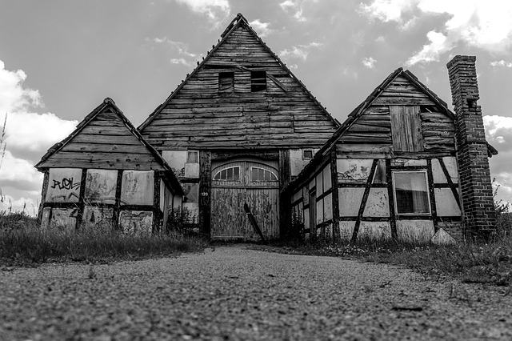
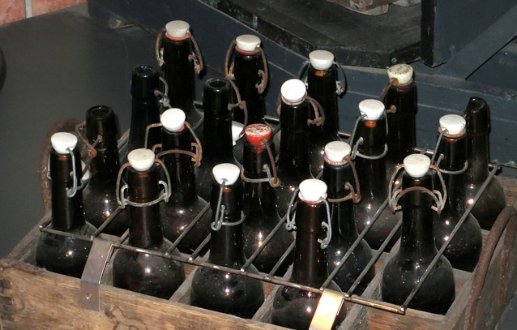
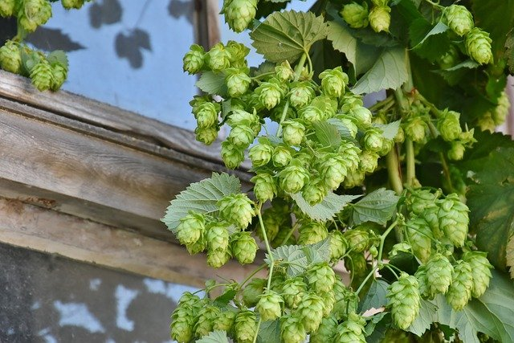

Unsere Unternehmensgeschichte
Darauf bauen wir auf:Die Grafenberger blicken auf eine ca. 410-jährige Unternehmensgeschichte mit Höhen und Tiefen zurück.


 1612 wurde der Grundstein für Grafenberger durch Paul August von Grafenberg gelegt.
1612 wurden mit dem Brauen des ersten hopfenhaltigen Getränks "Grafenbock" begonnen, traditionell per Hand
1700: Erweiterung des alkhoholischen Sortiments mit "Hefewunder"
1807: Abschluss Liefervertrag mit Napoleon
1910: Neubau der Brauerei
1913: Abschluss der Bauarbeiten und Inbetriebnahme 2000: Einführung des neuen Produkts "Grafenberger Dunkles".
2009: Einführung des "Edel-Heller Hopfentee"-Getränks
2014: Umsatzrekord durch den Erfolg der deutschen Nationalmannschaft bei der Fußball-WM in Brasilien.
2020: Die Corona-Pandemie trifft die Brauerei stark.